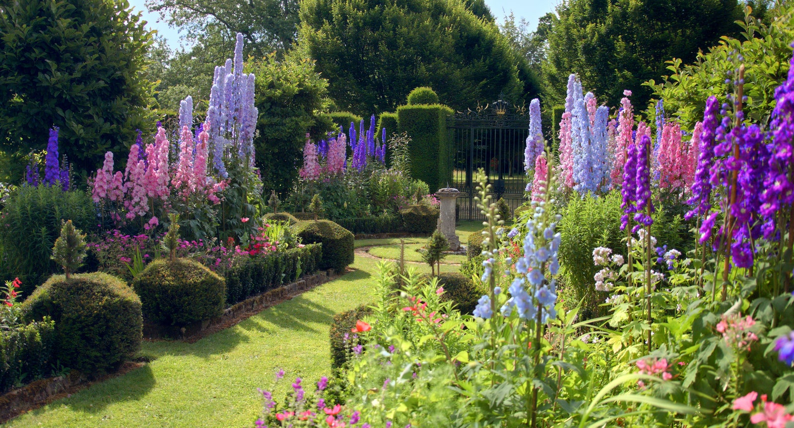

Royal family's gardens
Фирма "Royal family's gardens" набира градинари.
 Описание на задълженията:
- Поддържане тревните площи на клиентът.
- Озеленяване (при нужда)
- Подхранване/наторяване (при нужда)
- Поливане
- Подстригване
- Лечение (в случай на заболели разстения)
- Изхвърляне на отпадъци
- Подпомагане дейността по почистване и поддържане на територията на обекта
Необходими документи:
- Свидетелство за средно/основно образование
- Лична карта
За предимство се счита:
- Опит в градинарството
- Висше образование в сферата на агрономството (при наличие на такова може да се кандидатства и за по висока позиция)
Таблица с изисквания